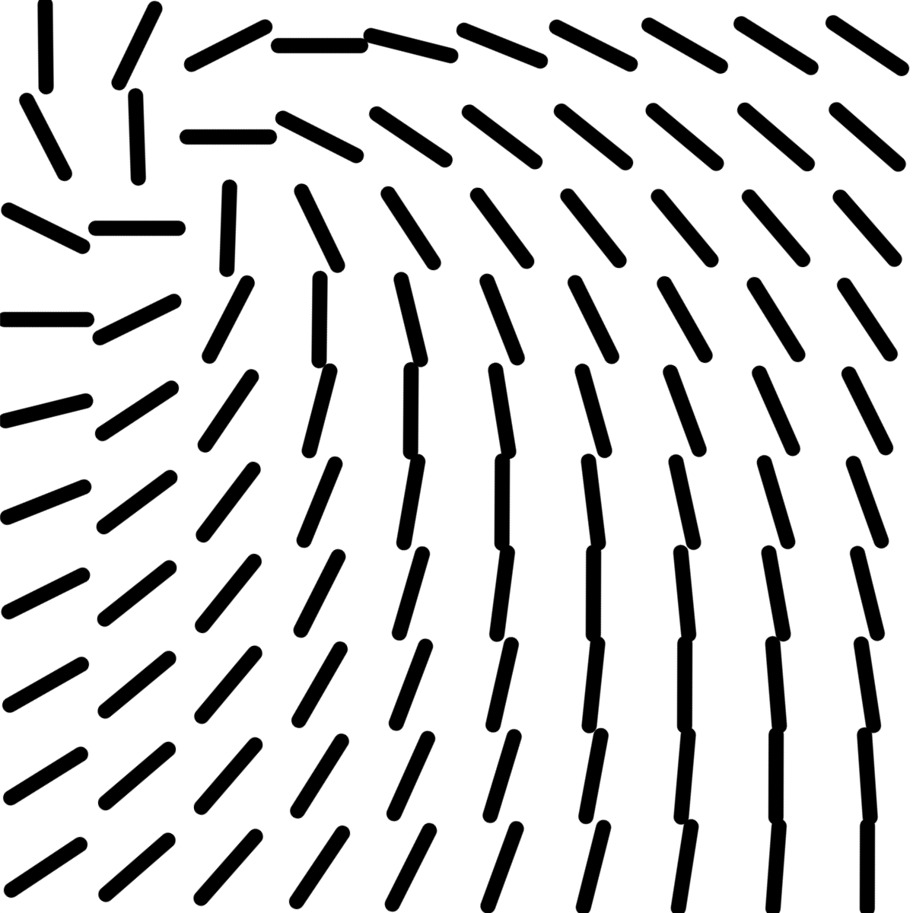
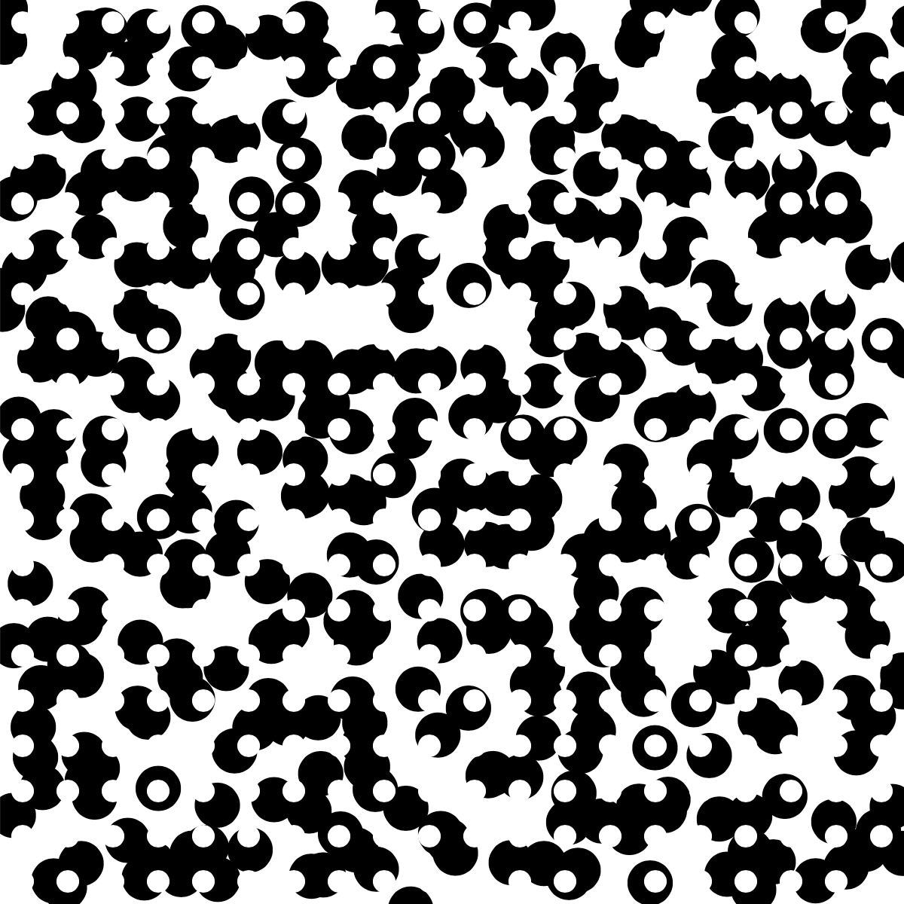
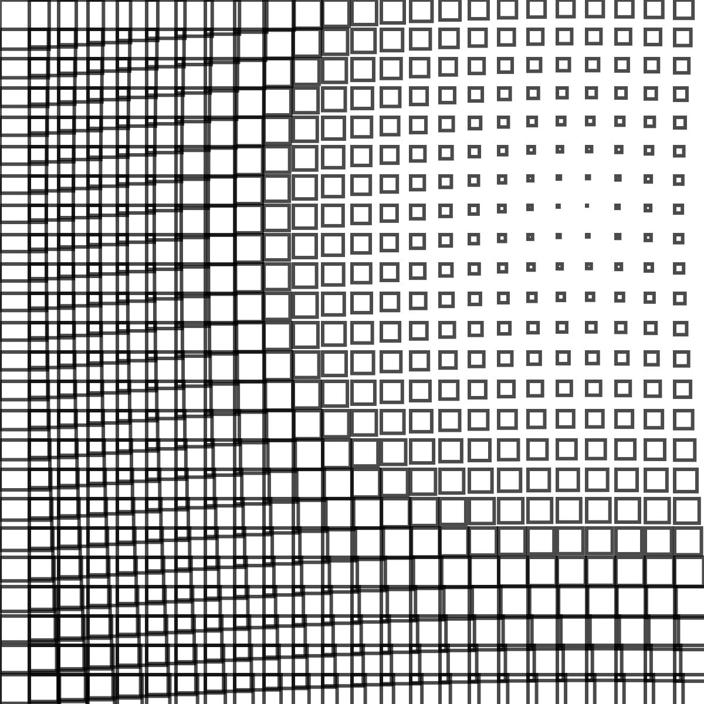
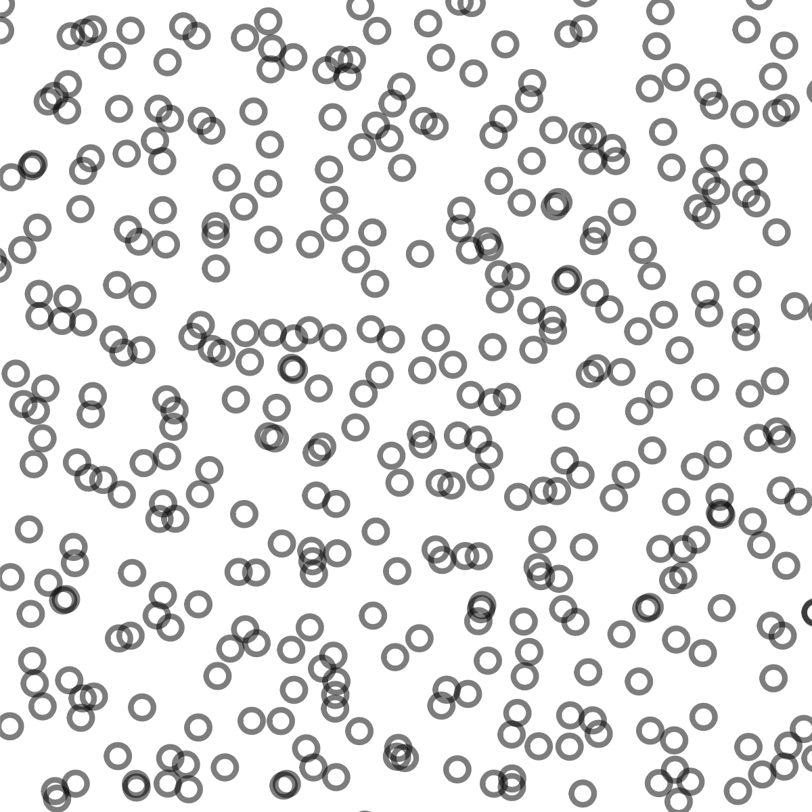
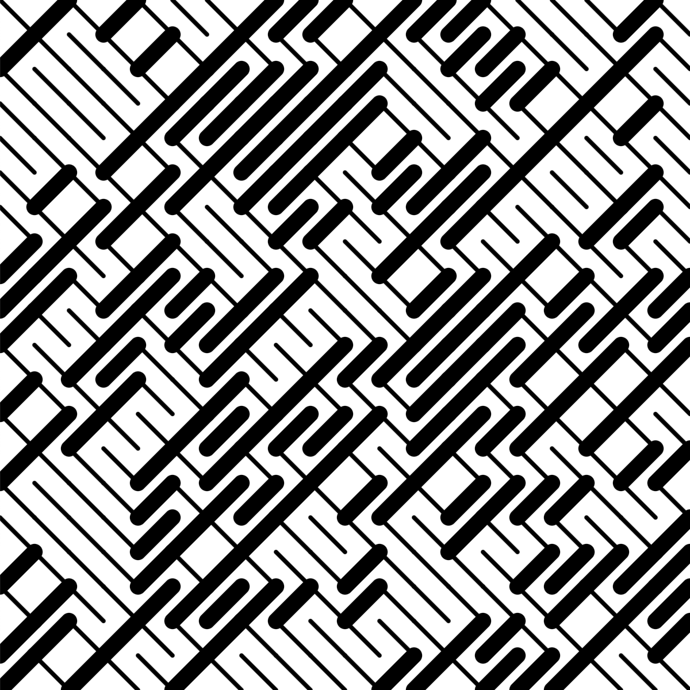
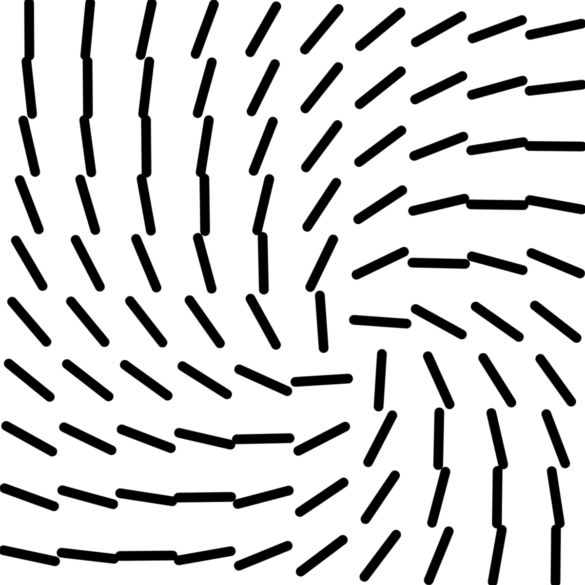
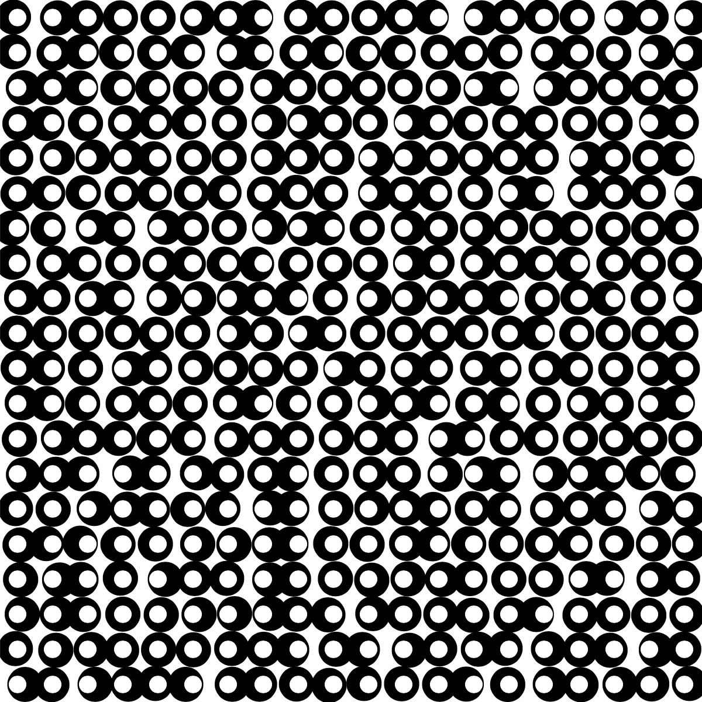
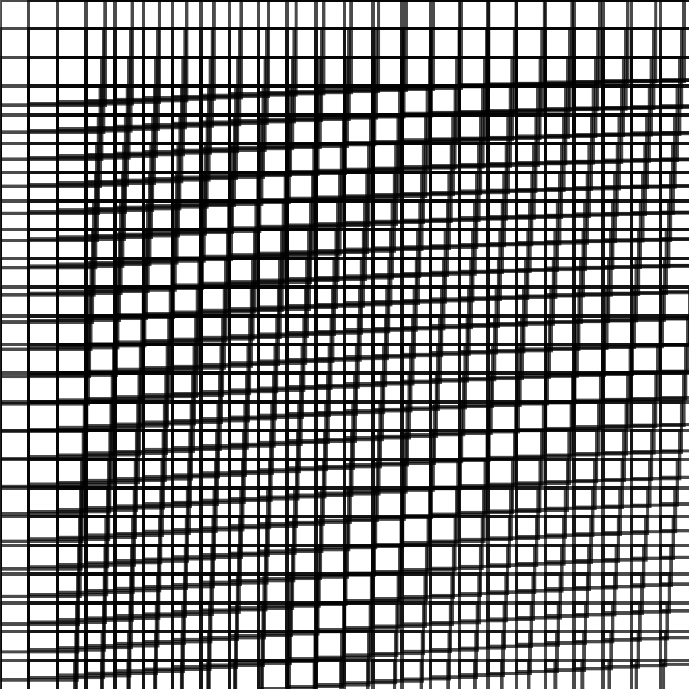
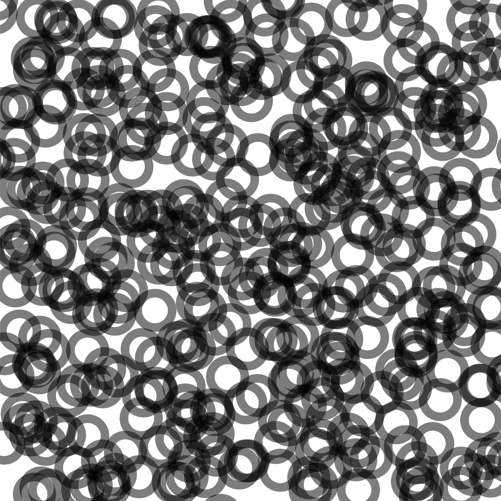
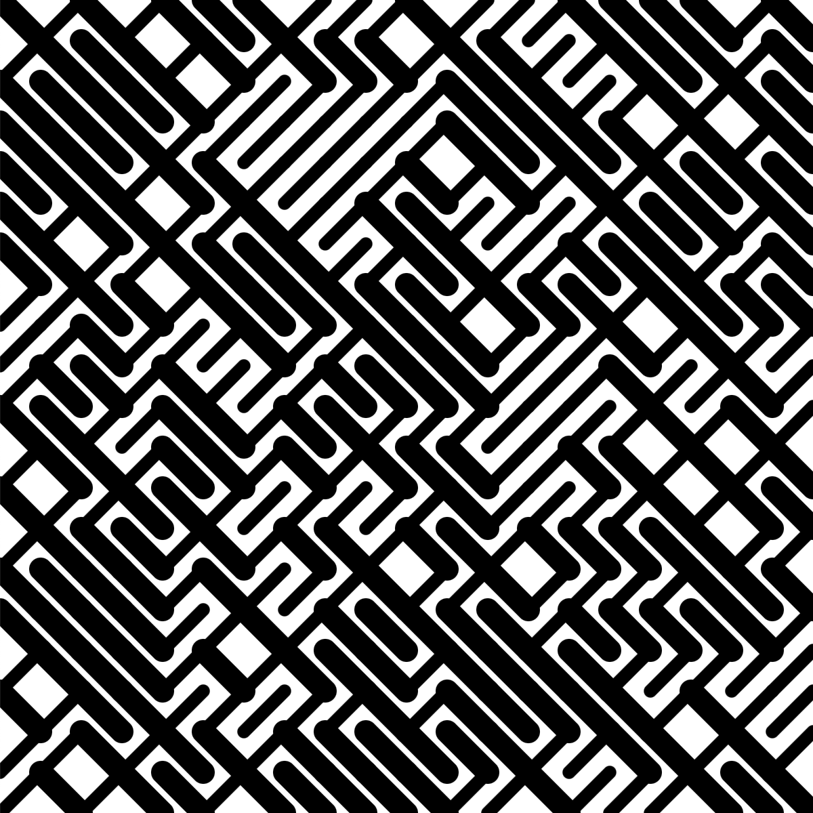

This session shows you how you can apply some of your recently developed programming skills to be more artistically expressive. It demonstrates how randomness can be used to generate patterns that have interesting and aesthetic quality.
Having worked through these resources and attending lectures and classes you should be able to:
- Use randomness in your sketches to add visual interest and variety;
- Use existing content in your work in ways that clearly identify its scope and origins in ways that are transparent, in line with any copyright or licensing restrictions, and that make the original source easily accessible to anybody reading or using your work;
1. Art, Artists and Computer Science
As students who have come to University to study for a degree in the Department of Computer Science, you may be wondering what has art got to do with your studies. Perhaps you have arrived here with qualifications in the sciences, mathematics or technology. As you learn and enhance your coding skills, most of your effort is likely to be in developing a structured, logical way of thinking. You will learn new technical skills, new programming constructions and approaches. You will learn to apply those skills in a systematic and rigorous way.
Yet there is also a space for creative thinking and expression, and this #CreativeCoding activity is intended to help you with this.
Sometimes this might have very direct application such as in the development of a game or ideas for a new apps.
But creative thinking can also help in problem solving, in developing your own 'voice' or approach to computer science.
In this session we will look at some of the ways people have mixed art with computer science to express themselves creatively as well as expand the range of tools available to you in Processing to express yourself.
We encourage you to be inspired and to experiment.
What does it mean to be expressive?
Really what we mean here is that we want you to produce outputs (sketches) that are personal - your work should be something that is meaningful to you.
Something that you like, that feels right, that feels like it has some of you in it.
It might capture your emotions, reflect your personal style preferences, perhaps countering expected styles or conventions. Be different. Do things your way.
We are really trying to encourage you to be spontaneous and to experiment, to try things out and see which results you like, which feel right as you explore possibilities and ideas without constraints and see where you get.
Where and when do you get somewhere that contains some of your personality, that you are pleased with, that feels good to you?
You'll know when you get there.
For an enlightening account of this blend of 'computer science thinking' and expressive visual art, have a read of this 2020 Interview With Generative Artist Jared Tarbell who produced many artworks with Processing, including Substrate shown below.
Curved variation on 'Substrate' by Jared Tarbell (click to enlarge)
You can play with Substrate and manipulate it online at OpenProcessing.org.
Processing was originally created for the purpose of providing artists with access to the computational space - the digital materials with which they could express themselves. If you watched the Hello World! Processing documentary, you will have heard Casey Reas, one of the original designers of Processing, explain that the idea was to allow new programmers to create a 'sketch book' of quickly generated programs that could explore different ideas. This digital sketchbook provides a medium for the programmer similar to a painter's oil and canvas. We have encouraged you to create something similar - a portfolio of activity, sketches, ideas, progress on GitHub.
There are many wonderful examples that reveal how programmers and artists have mixed the rigour of programming with the creativity of design, artistic expression and experimentation with Processing:
- For Your Processing — A curated list of interesting sketches created in Processing - find one that you like, find one that you don't like, find one that somebody you are chatting with disagrees with you about!
- Generative Design — Collection of example Processing scripts (p5.js) to support the (second edition) book 'Generative Design'.
- Gallery of Computation — Jared Tarbell's beautiful sketches created with Processing, along with Infinite Center, his current collection or work.
- openProcessing.org — A huge collection of shared Processing sketches.
- Bees and Bombs — Processing examples with an emphasis on geometric animations and optical illusions.
|  |  |  |  |  |
|  |  |  |  |  |
Compelling geometric examples from the second edition of Generative Design.
Processing Art Examples
Multiple examples of inspiring art are hidden in the pages to which we link above.
They use approaches that are accessible you - the methods and syntax that you have been learning in #CreativeCoding.
Spend 15 minutes following links, interacting, pasting code, trying things out and seeing whether you can relate what is being done to the functionality that you have learned about. Really, stop reading and spend 15 minutes, searching, playing, experimenting and being spontaneous with these pages.
Then think about how you may be able to COMBINE, ADAPT and MODIFY some of these ideas as you PUT THEM TO ANOTHER USE with your data to make interesting and expressive data representations in creative ways.
Processing and p5.js
You may have noticed that some of these examples were developed in Processing, while others made reference to (and were indeed developed in) p5.js.
So, what's going on there then?
Well, p5.js is effectively a JavaScript implementation of Processing, a version of Processing that is designed for the web, and while they differ a little, they are so similar that knowing one (for example the Java-based Processing that we have been using in #CreativeCoding) will mean that you can easily write code in the other.
Processing and p5.js are both tools for creative coding, but they differ in platform, purpose and in some of their linguistic detail - the syntax varies in places.
Processing was the original project and is Java-based. It provides a high-level programming language that is Java compatible (you can add Java commands to your sketches if you know them) and accessed and run through a standalone desktop application. Code is written in Java or a Java-like syntax and produces standalone applications or sketches.
p5.js is a JavaScript library that mimics Processing's style and functionality, so if you know one, you'll know the other. But it works well for browser-based creative coding and is particularly suited for web development. It is great for creating and sharing interactive maps, visualizations and graphical sketches that run directly in a browser, leveraging web technologies like HTML and CSS. While perhaps a little less suited for heavy computations than Processing, p5.js is great for creating and distributing web-based art and visualization projects, and the amazing optimization that is going on in the browser world means that JavaScript based computation is increasingly rapid and impressive.
Copyright, plagiarism and inspiration
Browsing the internet for examples of what others have done with Processing can be an effective way of gaining inspiration for your own work and getting a sense of programming possibilities. However you must be aware of two important rules when making use of the works of others:
Firstly, do not infringe copyright. If you wish to use, for example, a sample from someone's musical creation, you must check whether there are copyright restrictions placed on the work that would prevent you from doing this? It is important to understand and respect copyright because you have a moral and legal obligation to do so and because it will enable you to protect your own work should you create something original.
The Copyright, Designs and Patents Act of 1988 contains an important section dealing with permitted use of copyrighted material for education.
Under The Copyright, Designs and Patents Act, 1988, Section 32(2) of the Act allows copying of a sound recording, film or broadcast provided the copying is:
- (i) done by a person giving or receiving instruction, and
- (ii) accompanied by a sufficient acknowledgement
So this means that in practice, you can use copyrighted material for learning purposes within the constraints of your University education, but must not share copyrighted materials more widely or use them for other purposes.
A safer approach to using media created by others is to use materials that have licenses that permit or encourage sharing. In particular, media distributed under the creative commons (cc) is a good source that should give you access to lots of resources under copyright rules that are not restrictive. A useful site for searching for creative commons material is search.creativecommons.org.
Secondly, do not plagiarise others' work. Plagiarism means copying someone else's work, such as their code, or design without making it clear that it is their work, not your own. In other words, if you use someone else's work as a basis for your own, you must make it clear, through explicit attribution, where that source material came from and make it easy for the reader to know what is your own work and what belongs to others.
IMPORTANTLY: it is your job as the producer of original work that draws upon the existing work of others to make this totally transparent, and to make is as easy as possible for the reader to find and access the existing work upon which your contribution is based.
Doing this thoroughly is essential as it is required by law.
It is sometimes a little Harder Than You Think, but this should not deter you from spending as much time and effort as it takes to fully reference the scope and origins of all work that you use in anything that you create. This is an important responsibility, and an essential part of being a successful and socially responsible University student, and also a legal condition of your use of copyrighted material.
And, well ... it's a beautiful thing.
In terms of #CreativeCoding or indeed any other coding,
apart from being morally and ethically wrong, copying others' material without understanding exactly how it works is a very poor way of learning and is unlikely to make you a better programmer.
Important Acknowledgment : Prof. Jo Wood
At this point it is wise to make it clear that while Jason Dykes is leading this session, the materials were originally developed by Jo Wood.
What we are looking at today is very much in Jo's inimitable image.
The art, examples, code and ideas are all Jo's.
Jason has permission from Jo to adapt these materials a little to suit his style and present them to you.
But the credit is very definitely with Jo whose, knowledge, ideas and art are the inspiring basis for this session.
Indeed, Jo Wood was the brains and creative force behind our CodingBootCamp activity upon which #CreativeCoding is largely based - so if you are learning anything in here, it's predominantly down to Jo. Do feel free to let him know that his efforts are appreciated!
Beckett sketch detail by Jo Wood, generated entirely in Processing. See this blog for details on how it was produced.
Copyright Discussion & Examples
We have produced some guidance and examples relating to Copyright on an additional page.
We would like you to read it thoroughly and thought through the issues.
Once you have done so, and perhaps tried the web sites and sketches, please continue on with ...
Randomness
2. Randomness
Adding some randomness to your sketches is one way of adding visual interest and originality.
We've seen several examples of this already, such as when we generated moving balls that had a random velocity. The Processing method
random() is
a handy way of generating the random numbers we might use in our sketches. It normally takes two
parameters specifying the range of numbers from which a random value is generated. For example:
float xPosition = random(7,101);would generate a random number somewhere between 7 and 101 and store that number inside the variable
xPosition.
To see how just a little randomness can add interest to a sketch, let's consider the following
simple sketch that draws 8 squares in a row. This is very similar to the squares example we have
seen before, but in this case we will use the
quad() rather
than the
rect()
method. quad() takes 4 pairs of parameters, each identifying the position of a corner
of the shape. We use a simple for loop to draw 8 of these squares, each with a width and height of
90 pixels (stored inside the variable sSize):
quad() corner positions
void setup()
{
size(860, 200);
}
void draw()
{
background(255);
noStroke();
fill(0,0,200,100); // Transparent blue
float xPos = 40;
float yPos = 50;
float sSize = 90;
for (int i=0; i<8; i=i+1)
{
quad(xPos, yPos,
xPos + sSize, yPos,
xPos + sSize, yPos + sSize,
xPos, yPos + sSize);
xPos = xPos + 100;
}
}
Eight squares.
The reason we have used quad() rather than rect() in this example is that
it allows us to control the position of each corner of each square independently. This is where we
can add a simple random number to the position of each:
for (int i=0; i<8; i=i+1)
{
quad(xPos + random(-10,10), yPos + random(-10,10),
xPos + sSize + random(-10,10), yPos + random(-10,10),
xPos + sSize + random(-10,10), yPos + sSize + random(-10,10),
xPos + random(-10,10), yPos + sSize + random(-10,10));
xPos = xPos + 100;
}
Randomly varying the positions of quad() vertices away from the corners of the squares.
This produces an interesting effect.
The only changes made to the sketch are to add random(-10,10) to each x and y position
for each corner. If you were to run the sketch though, the result might be a little unexpected
(click the sketch below).
Jiggling random squares (click to activate)
The squares appear to wobble about rather than produce the static irregular shapes we might have
expected. This is because as the draw() loop repeats 60 times every second, new random
numbers are generated which are then used to reposition each square's corner points.
This may be a desirable outcome depending on what you are trying to achieve, but if you want your
shapes to stay still, you have a number of choices. The first might be to stop the sketch from
repeating the draw() code. We can turn off the 60 times a second repetition with a
single simple command noLoop(). This is a nice simple option, but has the disadvantage
that if we want other parts of our sketch to move, turning off the looping in draw()
will prevent this.
An alternative is that we can force Processing to generate the same set of random numbers each time
the draw() loop is called. This can be achieved using the
randomSeed()
method. For example, including the line ...
randomSeed(1234);... at the start of
draw() will generate the same sequence of random numbers every time draw() is
called. You can change the number 1234 to whatever you like and each seed value will
generate its own unique sequence of random numbers. This is a useful way of providing the same sequence
of random numbers every time you run your sketch, and each time the draw() loop is called, thereby stopping a wobble if that's not the effect that you are looking for.
Here is some more code that adds a little more variation to the randomness with some interaction.
boolean shake = true; // -- Do we want the rectangles to jitter?
void setup()
{
size(860, 200);
}
void draw()
{
background(255);
noStroke();
fill(0, 0, 200, 100); // -- Semi-transparent blue
if (!shake) {
randomSeed(224846); // -- The number here is not important
}
float xPos = 40;
float yPos = 50;
float sSize = 90;
// -- Make random range dependent upon x position of mouse
float rnd = map(mouseX, 0, width, 0,sSize);
for (int i=0; i<8; i=i+1)
{
quad(xPos + random(-rnd, rnd), yPos + random(-rnd, rnd),
xPos + sSize + random(-rnd, rnd), yPos + random(-rnd, rnd),
xPos + sSize + random(-rnd, rnd), yPos + sSize + random(-rnd, rnd),
xPos + random(-rnd, rnd), yPos + sSize + random(-rnd, rnd));
xPos = xPos + 100;
}
}
void mouseClicked () {
shake = !shake;
}
Interactive Random
Have a look at the code provided above, which extends the previous examples.
Try to interpret it and predict what will happen when you run the code.
Click and move the mouse to see whether you were right.
Modify the code - particularly the numbers - to see and understand the effects.
Other forms of Randomness
The random() function is very simple to use and works in many different situations. One
of its drawbacks for using this method for drawing is that every time a new random number is
generated, the new number is completely independent of the one before it. This means that if, say,
position of a shape is set using random(), it can appear to jump around the screen in a
very distracting way:
Randomly positioned circles using random() (click to activate)
void setup()
{
size(400,400);
fill(0,0,100);
noStroke();
}
void draw()
{
background(255);
float xPos = random(0,width);
float yPos = random(0,height);
circle(xPos,yPos,50);
}
An alternative is to use Processing's noise() method instead of random().
This also generates random numbers, but in this case, each subsequent random number can be made to
be a little similar to the previous one in the sequence. To see how this works, see the noise() reference page.
Although noise() can produce random numbers (between 0 and 1), it takes one or more
parameters and will produce the same random number for any given parameter value. But if we
provide something like the frameCount as a parameter, we can make that random number
change slowly on each redraw.
Below is a simple modification to the randomly positioned circle sketch that uses
noise() instead of random() to generate a much more smooth random
movement - each random number is somewhat similar to the previous one in the sequence.
Randomly positioned circles using noise() (click to activate)
void setup()
{
size(400,400);
fill(0,0,100);
noStroke();
}
void draw()
{
background(255);
float smoothness = 0.05; // Try changing this number between 0 and 1.
// -- After you have run the sketch, try this interaction and move the cursor :
// -- frameCount is not changing here, just the extent to which each subsequent noise() value is related to the previous one:
// smoothness = map(mouseX, 0,width, 0,0.05);
float xPos = noise(frameCount*smoothness,0)*width;
float yPos = noise(frameCount*smoothness,1)*height;
circle(xPos,yPos,50);
}For further details and inspiration for using structured randomness, see these tips on different forms of randomness and how you might use them in your sketches.
3. Generative Art : Deconstruction / Reconstruction
Vera Molnár began working with computers in 1968 and established herself as pioneer of algorithmic art by programming pen plotters in Basic and Fortran.
Her work is showcased in the Digital Art Museum, and I really enjoyed an exhibition hosted at Schloss Dagstuhl when I was staying in the castle for a workshop in the summer of 2022.
I find the Des Ordres - "some order" and perhaps "disorder" - exhibit particularly compelling.
The Digital Art Museum describes these pieces as involving ...
a pattern of concentric squares which is randomly disrupted in order to highlight the contrast between order and disorder and create tensions in the orthogonal structure, as if the squares were subject to a vibrating force
Back in 2022, Vera was in her late 90s, and I have used her work to inspire teaching ever since. Sadly, she died in late 2023 just before her 100th birthday. This short obituary from Artsy is one of many that confirms and celebrates her vital role in "exploring the relationship between technology and art". She was a truly inspiring pioneer in using computers for creative self-expression. I hope that she can inspire you.
Given what we know about Processing and randomness, we would like to see whether we can work out how Vera was experimenting in some of her work, and how she might have been using algorithms to explore form and produce work.
We are going to ...
- write a method to draw a square
- add some randomness to its corner positions
- draw squares within squares
- use randomness to omit some of the squares within squares
- create a grid of randomly varying squares within squares
We are doing so to practice using Processing, honing our skill, developing our knowledge, and to see whether we can find ways of using randomness and form to find our voice and be expressive in ways that are satisfying and meaningful. Basically, let's play and see whether we can make stuff that we like the look of.
Let's see whether we can recreate some of this ordered disorder using our Processing skills...
and whether we learn anything about order, disorder, aesthetic, what Vera was doing and perhaps Processing in the process.
Note that we hope to run this exercise in the in person lecture, so this is a chance to return to it, or complete it if you did not attend in class.
Vera Molnár - (Des) Ordres
Can you recreate some of the ordered disorder in Des Ordres using your Processing skills...
and does this enable you to learn anything about order, disorder, aesthetic, what Vera was doing and perhaps Processing in the process?
- Vera Molnár Exercise in Digital Art
Be sure to make some notes, do some sketching and reflect on how these ideas and what you have learned might be applicable to your efforts to represent data in interesting and creative ways in your Dear Data efforts.
Output from a sketch inspired by Vera Molnár's Des Ordres.
4. Summary
- Processing offers many ways of being creative in your design and generating artistic sketches that express that creativity.
- Be inspired by some of the amazing work that is available, but be sure to understand and comply with and celebrate copyright law as you legitimately build upon the work and ideas of others.
- Adding some randomness to your sketch is one way of adding visual interest and variety to your sketch design as you try to find your voice, and express yourself in your sketches.
- Take care when using other people's content in your own sketches that you are not infringing copyright and that you avoid plagiarism by always citing the sources of any material not your own - it is your responsibility to identify this clearly and make it as easy as possible for the reader to access the original source.